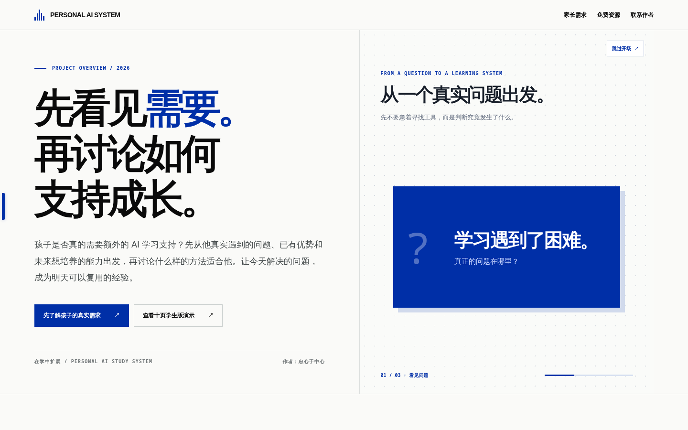
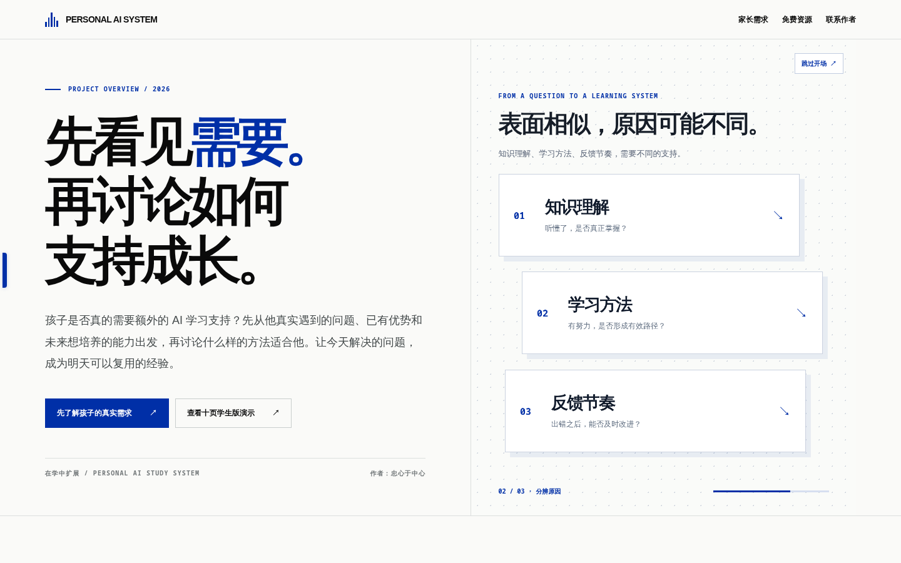
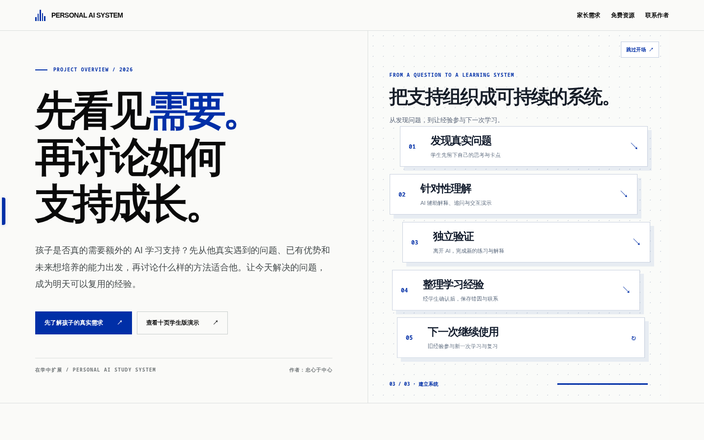

01 / QUESTION
问题
先从一个真正存在的学习困难出发。
首次进入时，一个学习问题分解成三种可能成因，再重新组织成五步学习闭环。打开侧栏时，同一个 Personal AI System 分为学生学习和成人工作两条路径。核心是整体结构变化，而非零碎弹出。
进入首页，亲自体验动画包含进入首页、问题分解、形成学习闭环和展开版本切换侧栏。可以暂停、拖动、重复观看。
使用真实实验站的截图，不是概念图。

先从一个真正存在的学习困难出发。

将同一表面问题分化为知识、方法与反馈三类可能成因。

通过形态变化，最后转成网页原有的五步闭环。